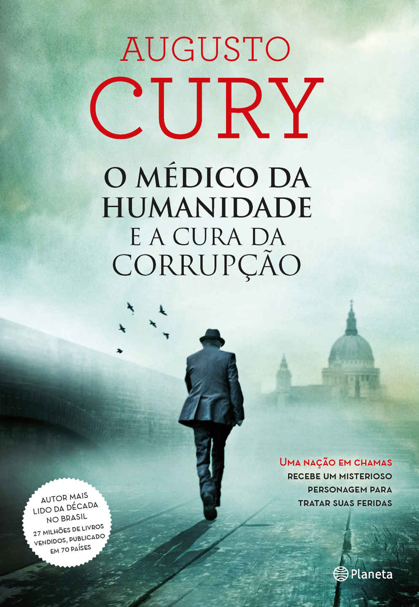
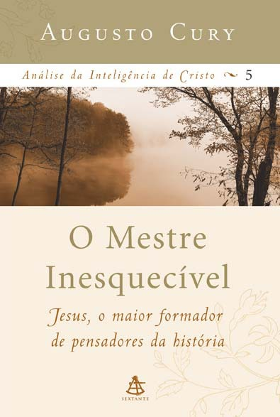
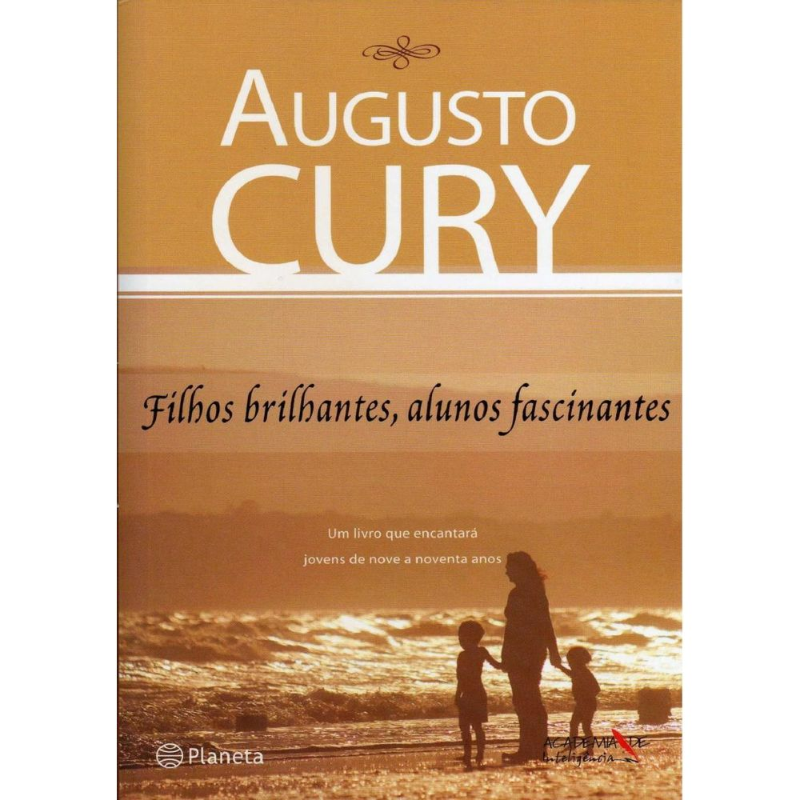
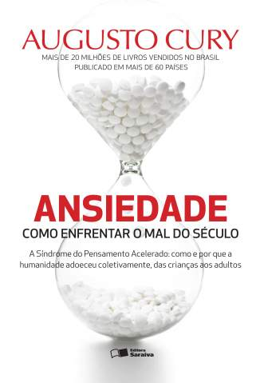

Livros de Augusto-Cury
Nunca Desista de Seus Sonhos

“Precisamos perseguir nossos mais belos sonhos.Desistir é uma palavra que tem que ser eliminada do dicionário de quem sonha e deseja conquistar.Não se esqueça de que você vai falhar 100% das vezes em que não tentar, vai perder 100% das vezes em que não procurar,vai estacionar 100% das vezes em que não ousar caminhar.”–Augusto Cury- Analisando a trajetória vitoriosa de grandes sonhadores, como Jesus Cristo, Abraham Lincoln e Martin Luther King, Cury nos faz repensar nossa vida e nos inspira a não deixar nossos sonhos morrerem.
O homem mais eficiente da história

Pensar é bom, pensar com consciência crítica é melhor ainda, mas pensar excessivamente é uma bomba contra a qualidade de vida e um intelecto criativo e produtivo.
O Medico da Humanidade e A Cura da Corrupcao

A humanidade,em particular o Brasil,está em chamas devido à corrupção Mas como ela se instala na mente humana.Todo ser humano tem vampiros mentais capazes de asfixiá-lo,como o orgulho,a ira,a inveja,o ciúme,a dissimulação,a ambição e a necessidade neurótica de ser o centro das atenções.Esses vampiros costumam ser imperceptíveis aos hospedeiros,embora os destruam.Este impactante romance histórico-psiquiátrico mostra como esses vampiros se alojaram na mente de um poderoso político,um líder considerado incorruptível.O homem rejeita a ideia de estar doente até deparar-se com o misterioso H,o médico da humanidade.
O Mestre do Amor
Este livro conta a história de amor pela vida,pela humanidade,por suas falhas e superações. Apenas uma pessoa foi capaz de levar esse sentimento às últimas consequencias e,em nome dele, entregar-se à morte.Em Mestre do Amor,“Análise da Inteligência de Cristo",o autor investiga a paixão que Jesus nutria pelo ser humano,com uma abordagem poética-embora baseada na ciência, na história e na psicologia-o autor faz um estudo das tocantes mensagens que Jesus deixou antes de morrer na cruz.
As Regras de ouro dos casais saudáveis

Este livro é a escolha ideal para todos os casais que desejam desenvolver as emoções e terem um relacionamento saudável.Casais inteligentes têm uma mente madura, atentam ao essencial, à grandeza do afeto, à notoriedade do diálogo.
Em busca do sentido da vida

A história prende o leitor é envolvente e,lendo o livro confirmei que não há escolha individual em que as consequências sejam individuais.É engraçado que brancos,negros,índios,pardos,americanos, coreanos,judeus e alemães...enfim,todos fazem parte de uma mesma espécie,originada de um mesmo ser. Me pergunto se eu teria essa mesma escolha...
O Mestre Inesquecível

Esta obra procura revelar e estudar o crescimento psíquico e intelectual - espiritual multifocal, emocional e interpessoal - vivido pelos apóstolos e mostrar como Jesus os transformou nos pensadores que revolucionaram a humanidade.
Filhos brilhantes alunos fascinantes

Em Filhos Brilhantes-alunos fascinantes,chegou a vez de falar com os próprios jovens sobre sua mente, seus conflitos e desafios.O livro trata das feridas de jovens e adultos feridos pela vda rejeitados socialmente,desacreditados, ortadores de conflitos,mas que conseguiram encontrar força na fragilidade e na dor.
Ansiedade

Cada ideia,pensamento,momento de solidão,de insegurança é registrado automaticamente e passa a fazer parte da colcha de retalhos da nossa história existencial,por isso quanto mais tentamos repelir uma ofensa,perda ou traição,mais elas serão registradas como janelas (traumas),mais serão lidas pelo gatilho da memória.